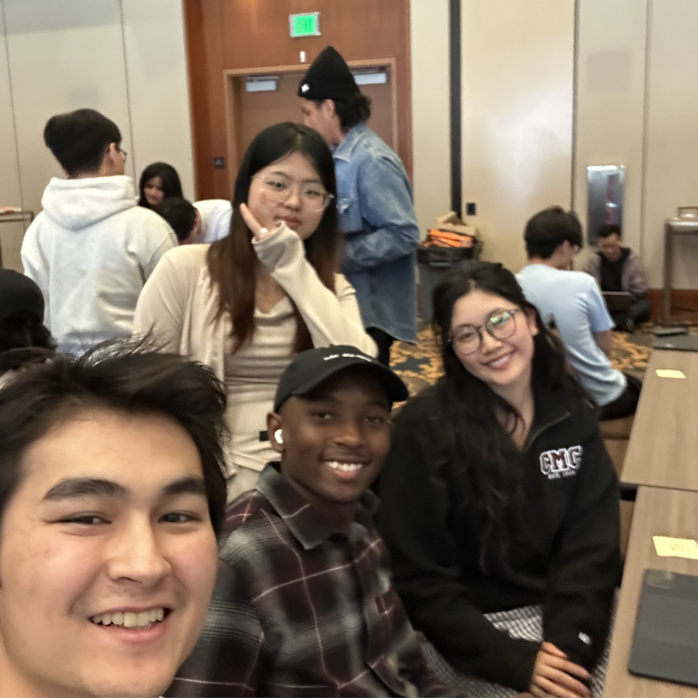

Tell-A-Sketch

Tell-A-Sketch is a generative creative studio built for kids — the result of a 24-hour Google Gemini Hackathon sprint with a team of four. A child speaks their idea, sketches out a character, and watches it come to life through real-time AI: generated video, sound, and narrative all in one seamless experience. It was built as a direct antidote to the fast-paced, passive, overstimulating content dominating kids' screens today.
The Problem
Children are consuming more than ever and creating less than ever. The educational entertainment space — think Cocomelon and algorithmic YouTube autoplay — is designed to capture attention, not spark it. Parents get pushed out of the loop, attention spans shrink, and genuine creative thought barely gets a chance. Tell-A-Sketch was built to hand that creative power back.
How It Works
The app opens with Simon the Star, a narrator character who guides the child through a "World Building" phase. The child picks a setting — Deep Ocean, Space, Dino Island — and then moves to a drawing canvas where they sketch their hero. A "Character Interview" overlay follows, where Simon asks the character's name, what they love to do, and one randomized personality question pulled from a question bank. With that input collected, the pipeline fires:
- The Gemini Live API conducts a real-time voice session — Simon asks "what happens next?" and the child narrates the episode.
- Gemini Nano (Nano Banana) takes the child's doodle and transforms it into a consistently styled character frame, preserving all the original shapes, colors, and "messiness" of the drawing.
- Veo animates those styled frames into 8-second cinematic clips, stitched together with slow-paced edits, long scene holds, and calm transitions — the deliberate opposite of Cocomelon's rapid cuts.
- Lyria generates a unique, mood-matched instrumental score per episode based on the child's story direction.
- A Neon PostgreSQL database maintains a "show bible" — characters, episode history, and world state — so that Episode 4 still remembers Blobby the Dragon's wonky ear from Episode 1.
My Role — Backend & Pipeline Glue
I owned the backend and the orchestration layer that connected all four models together. From the first hour, my job was to make sure every other team member had something to plug into. Here's what I shipped over the 15-hour build window:
- Designed and seeded the Neon schema:
characters,episodes, andworld_statetables, with relational linking for show bible persistence across sessions. - Built the REST API layer —
GET /api/show-bible,POST /api/episode,POST /api/character— so the frontend and generation pipeline could read and write without stepping on each other. - Built the orchestration endpoint (
/api/orchestrate) that took a Gemini Live API voice transcript and converted it into a ready-made Veo prompt and Lyria prompt, ready to fire. - Maintained world state updates via Gemini 2.5 Flash, which parsed each transcript and updated the show bible after every episode.
- Ran the end-to-end integration test at hour 13 (feature freeze), confirmed full pipeline: voice in → show bible updated → episode generated → playback working.
Challenges
Veo's 8-second generation limit (~2 minutes per clip) meant live generation on stage was never an option — we pre-baked all demo clips during hours 6–10 and used Veo 3 Standard only for the final hero clips shown to judges. The biggest integration friction came from merging the frontend and backend across parallel workstreams under time pressure; the solution was strict API contracts agreed on at hour 3 and a hardcoded JSON fallback in case the DB layer broke. The Live API voice session was the live "wow" moment on stage, with a text-input fallback built into the same screen so the pipeline would still run identically if the mic dropped.
Through this project I've learned and practiced:
- Designing and shipping a multi-model AI pipeline under extreme time constraints
- PostgreSQL schema design for persistent, relational "story state" across user sessions
- REST API development as a shared contract for parallel frontend and model workstreams
- Prompt engineering for Veo and Lyria — specifically tuning for slow-paced, child-appropriate output
- Integrating the Gemini Live API (WebSocket) into a real-time voice-driven narrative loop
- Hackathon-level scoping: knowing when to cut features, when to fake outputs, and when to freeze